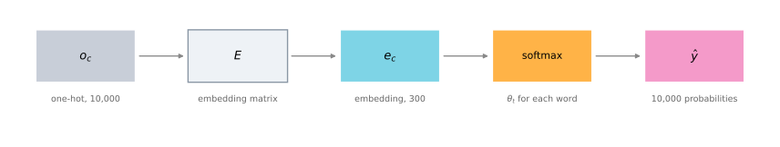
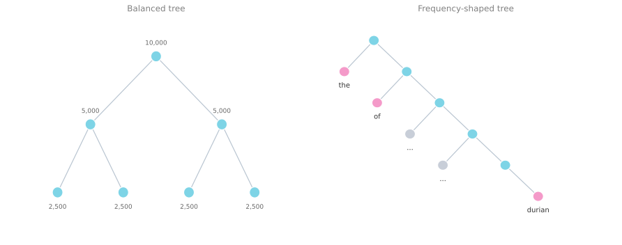
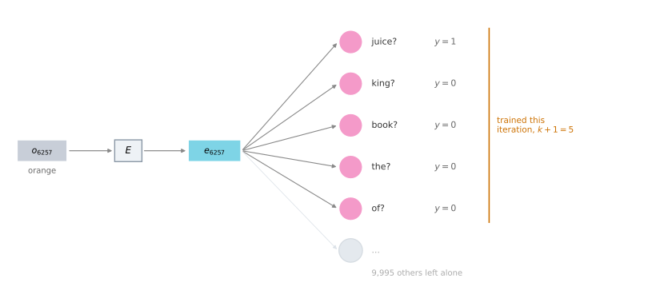
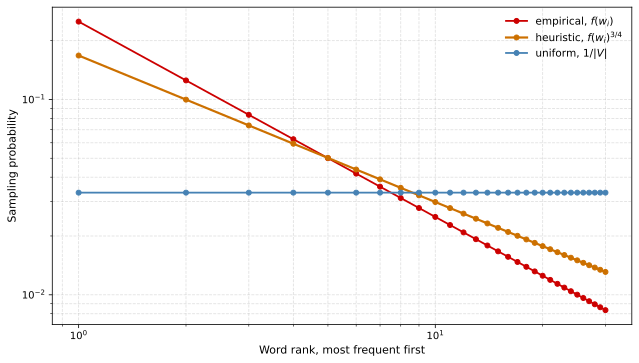
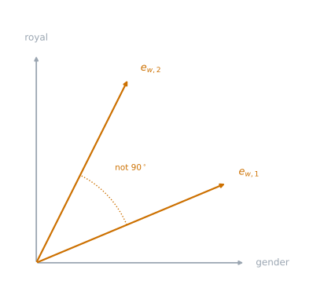

Learning Word Embeddings with Word2vec and GloVe
deep-learning
sequence-models
nlp
word-embeddings
word2vec
skip-gram
negative-sampling
glove
Four algorithms that learn the embedding matrix, from a neural language model through skip-gram, negative sampling, and the GloVe co-occurrence objective.
The previous page showed what a word embedding is and where the embedding matrix \(E\) fits, but not where \(E\) comes from. This page covers four concrete algorithms for learning it.
The history runs from complicated to simple. People started with relatively complex algorithms, and over time researchers discovered that simpler and simpler methods still gave very good results, especially on a large dataset. Some of the most popular algorithms today are so simple that presenting them first would make them look almost magical. So the order here goes from the slightly more complex algorithm, where the intuition for why it works is easiest to develop, toward the simpler ones.
Neural Language Model
Building a language model with a neural network turns out to be a reasonable way to learn a set of embeddings. The ideas in this section are due to Bengio et al. (2003).
During training you want the network to take an input such as I want a glass of orange and predict the next word in the sequence, which in this training example is juice. Each word carries its index in the vocabulary, so I is 4343, want is 9665, a is 1 because it comes first alphabetically, glass is 3852, of is 6163, and orange is 6257.
Start with the first word. Construct the one-hot vector \(o_{4343}\), which is 10,000-dimensional with a single 1 in position 4343. Multiply by the matrix of parameters \(E\) to get the embedding vector, \(e_{4343} = E \, o_{4343}\). Then do the same for every other word. The word want gives \(o_{9665}\), which becomes \(e_{9665}\) after multiplication by \(E\), and so on down the phrase.
On a small screen, scroll horizontally to see the full architecture.
Now there is a bunch of 300-dimensional embedding vectors, and they all feed into a neural network layer. That layer feeds a softmax, which classifies among the 10,000 possible words in the vocabulary for the final word being predicted. If the training example showed juice, then the target for the softmax during training is that it should predict juice as the word that came next.
The hidden layer has its own parameters, \(W^{[1]}\) and \(b^{[1]}\), and the softmax has its own, \(W^{[2]}\) and \(b^{[2]}\). With 300-dimensional word embeddings and six words in the input, that layer receives \(6 \times 300 = 1800\) numbers, a 1800-dimensional vector obtained by stacking the six embedding vectors together.
What is more commonly done is to use a fixed historical window. You might decide to always predict the next word given the previous four words, where four is a hyperparameter of the algorithm. That is how the model copes with very long or very short sentences. With a four-word history, the network takes a \(4 \times 300 = 1200\) dimensional feature vector into the layer, then the softmax, and predicts the output. Using a fixed history means the model handles arbitrarily long sentences, because the input size is always fixed.
The parameters of this model are the matrix \(E\) plus the weights \(W^{[1]}, b^{[1]}, W^{[2]}, b^{[2]}\). The same matrix \(E\) is used for every word, so there are not different matrices for the different positions among the preceding four words. Backpropagation and gradient descent then maximize the likelihood of the training set, repeatedly predicting, given four words in a sequence, what the next word in the corpus is.
This algorithm learns pretty decent word embeddings. The reason goes back to the orange juice and apple juice example. The algorithm has an incentive to learn similar embeddings for orange and apple, because doing so lets it fit the training set better. It sees orange juice sometimes and apple juice sometimes, and with only a 300-dimensional feature vector to represent all these words, it fits the training set best if apples, oranges, grapes, pears, and even a very rare fruit like durian all get similar feature vectors.
Review Questions
1. The input layer receives 1800 numbers in the six-word version and 1200 in the four-word version. Where do those numbers come from?
Answer
Each word is turned into a 300-dimensional embedding, and the embeddings are stacked end to end into one long vector. Six words give \(6 \times 300 = 1800\), and a fixed four-word history gives \(4 \times 300 = 1200\).
1. Why use a fixed historical window rather than the whole sentence?
Answer
Because the input size to the network has to be fixed. Sentences vary in length, but always taking the previous four words means the input is always \(4 \times 300\) numbers, so the model can handle arbitrarily long sentences without changing shape.
1. How many copies of \(E\) does this model have, and why does that matter?
One per position in the four-word history, so four
One, shared across every word and every position
One per word in the vocabulary, so 10,000
Two, one for the input and one for the output
Answer
b. There is a single matrix \(E\), used for every word regardless of where it sits in the history. That sharing is what makes it a word embedding at all. A word gets the same vector wherever it appears, so what the model learns about orange in one position transfers to every other position.
1. What pressure makes this model give apple and orange similar embeddings?
Answer
Fitting the training set. The corpus contains both orange juice and apple juice, so a model that predicts juice well after both has to treat the two words alike. With only 300 numbers per word, the cheapest way to do that is to place apple, orange, grape, pear, and even durian near each other. The embedding quality is a side effect of the language modeling objective, not something the loss asks for directly.
Choosing Context and Target
The job of the algorithm on the previous slide was to predict some word, juice, which is called the target word, given some context, which was the last four words. To generalize the algorithm, use a longer example sentence.
I want a glass of orange juice to go along with my cereal.
Researchers have experimented with many different types of context. If the goal is to build a language model, then it is natural for the context to be a few words right before the target word. But if the goal is not the language model itself, then other contexts are open.
| Context | Example, with juice as the target |
Note |
|---|---|---|
| Last 4 words | a glass of orange |
Natural if you actually want a language model |
| 4 words on the left and 4 on the right | a glass of orange and to go along with |
Predicts the word in the middle |
| Last 1 word | orange |
Much simpler, still learns useful embeddings |
| Nearby 1 word | glass |
The skip-gram idea |
Posing a learning problem where the embeddings of the four words on the left and the four on the right feed a neural network that predicts the word in the middle also learns word embeddings. Or you could use a simpler context still and take just the last one word. Given orange, what comes after it? You can build a network that takes the embedding of that single previous word and tries to predict the next one.
One thing that works surprisingly well is to take a nearby one word. Somebody tells you that the word glass appears somewhere close by, and asks what word you think is near it. That is using a nearby single word as the context, and it is the idea behind the skip-gram model. The context is now much simpler, one word rather than four, but it works remarkably well.
What researchers found is that if you really want to build a language model, it is natural to use the last few words as context. But if the main goal is to learn a word embedding, then all of these other contexts work, and they result in very meaningful embeddings as well.
Review Questions
1. Why does the choice of context depend on what you are actually trying to build?
Answer
A language model has to estimate the probability of the next word given what came before, so its context is forced to be the preceding words. Learning an embedding has no such constraint. The prediction task is only a device for pushing similar words toward similar vectors, so a context of four words on each side, or one nearby word, does the job just as well.
1. In the sentence above, if the context is “nearby 1 word” and the algorithm is given glass, what is it being asked to do?
Answer
It is asked to name a word that appears somewhere close to glass in the sentence, without being told where. It is not a prediction of the immediate next word, and there is no single right answer. That looseness is deliberate, because the point is the embeddings, not the accuracy on this task.
Word2Vec Skip-Gram Model
The Word2Vec algorithm is a simpler and considerably more efficient way to learn these embeddings. Most of the ideas here are due to Mikolov, Chen, et al. (2013).
In the skip-gram model, the supervised learning problem is built from context-to-target pairs. Rather than the context always being the last four words immediately before the target, randomly pick a word to be the context word. Say the choice is orange. Then randomly pick another word within some window, say plus or minus five words or plus or minus ten words of the context word, and make that the target.
| Context | Target | Where the target came from |
|---|---|---|
orange |
juice |
One word later |
orange |
glass |
Two words before |
orange |
my |
Further along, chosen by chance |
Obviously this is not an easy learning problem, because within plus or minus ten words of orange there could be a great many different words. But the goal in setting up this supervised problem is not to do well on it. The goal is to use the problem to learn good word embeddings.
Here are the details. The vocabulary stays at 10,000 words, although vocabulary sizes exceeding a million words are used in practice. The mapping to learn goes from some context \(c\), such as the word orange, to some target \(t\), which might be juice or glass or my. In the vocabulary, orange is word 6257 and juice is word 4834.
To represent the input, start with the one-hot vector \(o_c\) for the context word. Take the embedding matrix \(E\) and multiply, which gives \(e_c = E \, o_c\), the embedding vector for the context word. Feed \(e_c\) into a softmax unit, and the softmax outputs \(\hat{y}\).

Written out, the softmax model gives the probability of different target words given the input context word.
\[p(t \mid c) = \frac{e^{\,\theta_t^{T} e_c}}{\sum_{j=1}^{10{,}000} e^{\,\theta_j^{T} e_c}}\]
Here \(\theta_t\) is a parameter vector, the one associated with the chance of a particular word \(t\) being the label. It has the same dimension as \(e_c\), so the inner product \(\theta_t^{T} e_c\) is a single number. The bias term is left off here, although it could be included.
The loss function is the usual one for softmax. Using \(y\) to represent the target word as a one-hot vector, and \(\hat{y}\) as the softmax output, the loss is the negative log likelihood.
\[\mathcal{L}(\hat{y}, y) = -\sum_{i=1}^{10{,}000} y_i \log \hat{y}_i\]
If the target word is juice, then \(y\) has a 1 in element 4834 and zeros everywhere else, while \(\hat{y}\) is a 10,000-dimensional vector of probabilities over all possible target words.
So the whole model is small. It looks up an embedding and applies one softmax unit. The matrix \(E\) holds a lot of parameters, one embedding vector per word, and the softmax has the \(\theta_t\) parameters. Optimizing this loss with respect to all of them yields a pretty good set of embedding vectors. It is called the skip-gram model because it takes one word such as orange as input and tries to predict a word some distance to the left or the right, skipping a few words to get there.
Problems with Softmax Classification
There are a couple of problems with this algorithm, and the primary one is computational speed. Every time you evaluate that probability, you have to carry out a sum over all 10,000 words in the vocabulary, the denominator of the softmax. Ten thousand is already slow, and it gets far worse with a vocabulary of 100,000 or a million.
One solution seen in the literature is a hierarchical softmax classifier. Instead of categorizing into all 10,000 classes in one go, imagine a classifier that tells you whether the target word is in the first 5,000 words of the vocabulary or the second 5,000. If it says the first 5,000, a second classifier tells you whether it is in the first 2,500 of those or the second 2,500, and so on until you reach a leaf that identifies exactly which word it is. Every internal node of that tree is just a binary classifier, so you never sum over all 10,000 words to make a single classification. The cost of classifying with a tree like this scales like \(\log\) of the vocabulary size rather than linearly in it.
In practice the hierarchical softmax does not use a perfectly balanced, symmetric tree with equal numbers of words on the left and right of each branch. It is built so that common words tend to sit near the top while less common words like durian are buried much deeper. Common words such as the and of are seen far more often, so a few traversals should reach them, whereas an infrequent word is reached rarely and can afford to be deep.

Before moving on, one more question. How do you sample the context \(c\)? Once \(c\) is chosen, the target \(t\) can be sampled within, say, a plus or minus ten word window of it, but the choice of \(c\) itself matters.
One option is to sample uniformly at random from the corpus. Do that and you find that words like the, of, a, and, and to appear extremely frequently, so the context-to-target pairs are dominated by them, while words like orange, apple, and durian show up rarely. You do not want the training set dominated by extremely frequent words, because then almost all the effort goes into updating \(e_c\) for those words, and little into words like \(e_{\text{durian}}\). So in practice the distribution \(P(c)\) is not taken uniformly at random. Different heuristics balance sampling from the common words against sampling from the less common ones.
NoteSkip-gram is one of two Word2Vec models
The original paper presents two versions of Word2Vec. The skip-gram model above is one. The other is CBOW, the continuous bag of words model, which takes the surrounding context of a middle word and uses those surrounding words to predict the middle word. That algorithm also works, with its own advantages and disadvantages.
The key problem with the skip-gram model as presented so far remains the softmax step, which is expensive because of the sum over the whole vocabulary in the denominator. The next section modifies the training objective so it runs much more efficiently, which in turn lets you train on a much bigger dataset and learn better embeddings.
Review Questions
1. What exactly makes the softmax denominator expensive, and how does a hierarchical softmax reduce the cost?
Answer
The denominator is \(\sum_{j=1}^{10{,}000} e^{\theta_j^{T} e_c}\), so a single probability evaluation touches every word in the vocabulary. That is linear in vocabulary size, and it becomes painful at 100,000 or a million words. A hierarchical softmax replaces the one 10,000-way decision with a tree of binary decisions, so the cost of a single classification scales like \(\log\) of the vocabulary size instead.
1. Why is the hierarchical softmax tree deliberately unbalanced?
Answer
Because the cost that matters is the average over how often each word actually gets looked up. Putting common words like the and of near the root makes the frequent lookups short, and burying durian deep costs little because that path is taken rarely. A balanced tree gives every word the same depth, which spends the same effort on a word seen once as on a word seen a million times.
1. If sampling the context word uniformly at random is a problem, what goes wrong?
Rare words are sampled too often and dominate training
Frequent words like
theandofdominate, so most updates go to their embeddingsThe softmax denominator becomes undefined
The context and target end up being the same word
Answer
b. Sampling uniformly from the running text means sampling in proportion to how often words occur, and a handful of function words occur enormously often. Nearly every update then adjusts \(e_{\text{the}}\) or \(e_{\text{of}}\), while \(e_{\text{durian}}\) is barely touched. Heuristics that sit between the empirical frequency and a flat distribution are used instead.
1. What is the difference between skip-gram and CBOW?
Answer
They run in opposite directions. Skip-gram takes one word as the context and predicts a nearby word. CBOW, the continuous bag of words model, takes the surrounding words and predicts the word in the middle. Both are in the original Word2Vec paper, and each has its own advantages and disadvantages.
1. True or false. When learning word embeddings, we create an artificial task of estimating \(P(\text{target} \mid \text{context})\). It is okay if we do poorly on this artificial prediction task, because the more important by-product of the task is that we learn a useful set of word embeddings.
Answer
True. Predicting a randomly chosen word from somewhere in a wide window is a hard prediction problem, because a great many words could plausibly appear near orange. Doing well on it was never the point. The task is set up to create a gradient that pushes words appearing in similar contexts toward similar vectors, and it is those vectors you keep.
1. True or false. In the word2vec algorithm you estimate \(P(t \mid c)\), where \(t\) is the target word and \(c\) is a context word. The pair is drawn from the training set by taking \(c\) to be the sequence of all the words in the sentence before \(t\).
Answer
False. \(t\) and \(c\) are chosen to be nearby words. A single context word is sampled, and the target is drawn from a window around it, so the target may lie on either side rather than always following. The stem resembles the neural language model from the first section of this page without quite describing it, because that model takes a fixed window of preceding words, four in the worked example, rather than every word in the sentence before the target. Skip-gram is neither one. Its context is a single nearby word.
1. Suppose you have a 10,000 word vocabulary and are learning 100-dimensional embeddings with the word2vec softmax above. True or false: after training, you should expect \(\theta_t\) to be very close to \(e_c\) when \(t\) and \(c\) are the same word.
Answer
False. \(\theta_t\) and \(e_c\) are two separate sets of parameters that play different roles. \(e_c\) is the input embedding looked up from \(E\), while \(\theta_t\) is an output-side parameter belonging to the softmax. The objective does couple them, through the inner product \(\theta_t^{T} e_c\), but coupling is not the same as agreement. No term anywhere in it requires the two vectors belonging to one and the same word to be equal, and they are initialized independently, so there is no reason to expect them to converge on each other.
Negative Sampling
Negative sampling is a modified learning problem that does something similar to the skip-gram model, but with a much more efficient learning algorithm. Most of the ideas here are due to Mikolov, Sutskever, et al. (2013).
The new supervised learning problem is this. Given a pair of words like orange and juice, predict whether this is a context-target pair. Here orange and juice is a positive example, so the label is 1. What about orange and king? That is a negative example, so the label is 0.
The positive example is generated exactly as before. Sample a context word, look around a window of say plus or minus ten words, and pick a target word. That gives the first row of the table below. To generate the negative examples, take the same context word and pick a word at random from the dictionary. Here king was picked at random and labeled 0. Then orange again with another random word, book, on the assumption that a random word probably is not associated with orange. Then the, then of.
| Context | Word | Target? |
|---|---|---|
orange |
juice |
1 |
orange |
king |
0 |
orange |
book |
0 |
orange |
the |
0 |
orange |
of |
0 |
Notice that all of these are labeled 0 even though the word of does actually appear next to orange as well. It is fine if, just by chance, one of the words picked at random from the dictionary happens to appear in a plus or minus ten word window next to the context word.
To summarize the recipe, pick a context word and a target word to make one positive example labeled 1. Then, some number of times, say \(k\) times, take that same context word and pick random words from the dictionary, labeling all of them 0. Those are the negative examples.
The algorithm then takes \(x\), that pair of words, and predicts the target label \(y\). The question it answers is really whether these two words appeared together. Did I get these two words by sampling two words close to each other, or did I get one word from the text and one word chosen at random from the dictionary? The task is to distinguish between those two ways of drawing a pair.
For the value of \(k\), the recommendation is \(k = 5\) to \(20\) for smaller datasets, and if you have a very large dataset then choose \(k\) smaller, so \(k = 2\) to \(5\) for larger datasets. The table above uses \(k = 4\).
Model
Write \(c\) for the context word, \(t\) for the possible target word, and \(y\) for the 0 or 1 label. The model is a logistic regression.
\[P(y = 1 \mid c, t) = \sigma\!\left(\theta_t^{T} e_c\right)\]
The parameters are the same as before. There is one parameter vector \(\theta_t\) for each possible target word, and a separate embedding vector \(e_c\) for each possible context word. With \(k\) negative examples per positive one, there is a \(k\) to 1 ratio of negative to positive examples for training this logistic regression model.
Drawn as a network, if the input word is orange, which is word 6257, then the one-hot vector passes through \(E\) to give the embedding \(e_{6257}\). What sits on top is really 10,000 possible logistic regression classification problems. One of them asks whether the target word is juice or not, another asks whether it is king or not, and so on for every word in the vocabulary.

Think of this as 10,000 binary logistic regression classifiers. But instead of training all 10,000 of them on every iteration, only five are trained. The one corresponding to the actual target word, plus the four randomly chosen negative examples, for the case \(k = 4\). Instead of one giant 10,000-way softmax, which is very expensive to compute, the problem has become 10,000 binary classification problems, each of which is cheap, and only \(k + 1\) of them are touched per iteration, with \(k\) negative examples and one positive example. That is why the computational cost is so much lower. The name negative sampling comes from exactly this. You have a positive example, orange and juice, then you deliberately generate a batch of negative examples to train the other binary classifiers, and on every iteration you pick a fresh set of \(k\) random negative words.
Selecting Negative Examples
One more detail. Having chosen the context word orange, how do you sample the words that become the negative examples?
One option is to sample according to the empirical frequency of words in the corpus, simply by how often different words appear. The problem is that this gives a very high representation of words like the, of, and and. The other extreme is to use \(1 / |V|\), sampling the negative examples uniformly at random, but that is also very unrepresentative of the distribution of English words.
What the authors reported as working best empirically is a heuristic that sits between the two extremes. They sampled proportional to the frequency of a word raised to the power of three quarters. If \(f(w_i)\) is the observed frequency of a particular word in the corpus, then
\[P(w_i) = \frac{f(w_i)^{3/4}}{\sum_{j=1}^{10{,}000} f(w_j)^{3/4}}\]
This lands somewhere between the uniform distribution and the observed distribution in the training set.

This heuristic is not strongly theoretically justified, but multiple researchers use it and it seems to work decently well.
As is the case elsewhere in deep learning, there are open source implementations and pre-trained word vectors that others have trained and released online under permissive licenses. To get going quickly on an NLP problem, downloading someone else’s word vectors and using them as a starting point is a reasonable move.
Review Questions
1. Negative sampling still has 10,000 classifiers. Why is it so much cheaper than the softmax?
Answer
Because the 10,000 are independent binary classifiers rather than one coupled 10,000-way softmax. The softmax denominator forces every word to be evaluated for a single prediction. With binary classifiers there is no shared denominator, so an iteration can update just the \(k + 1\) classifiers it cares about, one positive and \(k\) negatives, and leave the other 9,995 alone.
1. In the table, of is labeled 0 even though of really does appear near orange in the sentence. Is that a mistake?
Answer
No. The negative examples are drawn at random from the dictionary, and it is fine if one of them happens to fall inside the window by chance. The label records how the pair was drawn, not whether the two words are genuinely near each other.
1. What values of \(k\) are recommended for a smaller dataset and for a very large one?
Answer
For smaller datasets the recommendation is \(k = 5\) to \(20\). For a very large dataset, choose \(k\) smaller, so \(k = 2\) to \(5\). The worked example above uses \(k = 4\).
1. Why is the sampling distribution for negative examples set to \(f(w_i)^{3/4}\) rather than \(f(w_i)\) or \(1/|V|\)?
It is derived from the maximum likelihood solution
It is an empirical compromise between over-sampling frequent words and ignoring their real frequency
It makes the softmax denominator cancel
It guarantees every word is sampled the same number of times
Answer
b. Sampling by raw frequency floods the negatives with the and of. Sampling uniformly ignores how English actually behaves. Raising the frequency to the power of three quarters flattens the distribution without erasing it. The choice is empirical rather than theoretically justified, but it is widely used and works decently well.
GloVe Word Vectors
GloVe is another algorithm with some momentum in the NLP community. It is not used as much as Word2Vec or the skip-gram model, but it has its enthusiasts, in part because of its simplicity. It was created by Pennington et al. (2014), and GloVe stands for global vectors for word representation.
Previously, pairs of words were sampled by picking two words that appear in close proximity to each other in the corpus. What GloVe does is start by making that explicit. Let \(X_{ij}\) be the number of times word \(j\) occurs in the context of word \(i\). Here \(i\) and \(j\) play the roles of \(t\) and \(c\), so you can think of \(X_{ij}\) as \(X_{tc}\). Go through the training corpus and count how many times each word occurs in the context of each other word.
Whether \(X_{ij} = X_{ji}\) depends on the definition of context and target. If context and target are defined by whether the two words appear within plus or minus ten words of each other, then the relationship is symmetric and \(X_{ij} = X_{ji}\). If instead the context is always the word immediately before the target, the two counts can differ. For GloVe, take the symmetric definition, so \(X_{ij}\) is simply a count of how often words \(i\) and \(j\) appear close to each other.
What the model optimizes is the following.
\[\text{minimize} \ \sum_{i=1}^{10{,}000} \ \sum_{j=1}^{10{,}000} f(X_{ij}) \left( \theta_i^{T} e_j + b_i + b'_j - \log X_{ij} \right)^{2}\]
Again, think of \(i\) and \(j\) as playing the roles of \(t\) and \(c\), so the term \(\theta_i^{T} e_j\) is the same kind of quantity as \(\theta_t^{T} e_c\) from the skip-gram model. What you want is for it to say how related those two words are, as measured by how often they occur with each other, which is what \(X_{ij}\) records. The terms \(b_i\) and \(b'_j\) are bias terms, one per word on each side. Solve for the parameters \(\theta\), \(e\), and the biases with gradient descent. The goal is simply to learn vectors whose inner product is a good predictor of how often the two words occur together.
Two details fill in the rest of the equation.
The weighting term \(f(X_{ij})\) handles the zeros. If \(X_{ij} = 0\) then \(\log 0\) is undefined, negative infinity. So \(f\) is defined to be 0 whenever \(X_{ij} = 0\), under the convention that \(0 \log 0 = 0\). The effect is that pairs which never co-occurred are simply not summed over, so the \(\log 0\) term never matters. The sum runs only over pairs of words that have co-occurred at least once.
The same weighting term balances frequent against infrequent words. Some words appear very often in English, such as this, is, of, and a. These are sometimes called stop words, although there is really a continuum between frequent and infrequent words rather than a clean line. And there are infrequent words like durian that you still want to take into account, just not as heavily as the common ones. So \(f\) is chosen to give a meaningful amount of weight even to the less frequent words, and to give more weight, but not an unduly large amount, to words like this, is, of, and a. Various heuristics exist for choosing \(f\) so that it neither over-weights the common words nor under-weights the rare ones. The GloVe paper has the details.
One funny thing about this algorithm is that the roles of \(\theta\) and \(e\) are now completely symmetric. Looking at the math, \(\theta_i\) and \(e_j\) play essentially the same role, and swapping them leaves the same optimization objective. One way to train is to initialize \(\theta\) and \(e\) both uniformly at random, run gradient descent to minimize the objective, and then for every word take the average of the two.
\[e_w^{(\text{final})} = \frac{e_w + \theta_w}{2}\]
That averaging is legitimate here precisely because \(\theta\) and \(e\) play symmetric roles in this formulation, unlike the earlier models where they play different roles and could not be averaged.
If the equation looks almost too simple, that reaction is reasonable. It is not obvious that minimizing a square cost function like this should produce meaningful word embeddings, but it does. The way the inventors arrived at it was by building on the history of much more complicated algorithms, first the neural language model, then the Word2Vec skip-gram model, and then this, each attempt simplifying what came before.
Review Questions
1. What does \(f(X_{ij})\) do, and why does the algorithm break without it?
Answer
It does two jobs. First, it is defined as 0 when \(X_{ij} = 0\), which keeps \(\log 0\) out of the objective. Most word pairs never co-occur, so without this the sum would be full of undefined terms. Second, it balances the weighting so common words like of and a do not dominate and rare words like durian are not ignored.
1. Why can GloVe average \(\theta_w\) and \(e_w\) at the end when the earlier algorithms cannot?
Answer
Because in the GloVe objective the two are symmetric. Swapping \(\theta_i\) and \(e_j\) gives the same optimization problem, so both end up as equally valid representations of the same word and averaging them is meaningful. In the skip-gram and negative sampling models, \(\theta_t\) is an output-side parameter and \(e_c\) is the input embedding. They mean different things, so averaging them would be mixing two different quantities.
1. Under which definition of context is \(X_{ij} = X_{ji}\)?
When context is always the word immediately before the target
When context and target are any two words within plus or minus ten words of each other
Under both definitions
Under neither, the matrix is never symmetric
Answer
b. Being within ten words of each other is a symmetric relation, so counting from either side gives the same number. Taking the context to be the word immediately before the target is directional, and then \(X_{ij}\) and \(X_{ji}\) can differ. GloVe uses the symmetric definition.
1. True or false. In the GloVe objective, \(X_{ij}\) is the number of times word \(j\) appears in the context of word \(i\).
Answer
True. That is the definition, and the order of the two indices is easy to get backwards. Under the symmetric definition of context used here, two words within plus or minus ten words of each other, the direction happens not to matter for the value, since \(X_{ij} = X_{ji}\). It would matter under a directional definition, such as taking the context to be the word immediately before the target.
Note on the Featurization View
Before leaving the topic of learning word embeddings, one more property is worth discussing. The motivation for learning word vectors started from a featurization view, the table of feature values for man, woman, king, and queen. Perhaps the first component of the embedding vector represents gender, the second how royal the word is, then age, then whether it names a food, and so on.
But when you learn an embedding with any of the algorithms above, you cannot guarantee that the individual components are interpretable.
Why not? Suppose there is some space whose first axis is gender and whose second axis is royal. Nothing forces the first axis of the learned embedding vector to line up with that axis of meaning. The learning algorithm might pick some other direction as its first dimension, and its second dimension need not even be orthogonal to the first.

There is a short argument for why no algorithm of this form can pin the axes down. Look again at the GloVe objective, and note that \(\theta\) and \(e\) enter it in exactly one place.
\[\text{minimize} \ \sum_{i=1}^{10{,}000} \ \sum_{j=1}^{10{,}000} f(X_{ij}) \bigl( \underbrace{\theta_i^{T} e_j}_{\text{the only term holding } \theta \text{ and } e} + b_i + b'_j - \log X_{ij} \bigr)^{2}\]
Now take any invertible matrix \(A\). That single term could just as easily be produced by \(A\theta_i\) and \(A^{-T} e_j\) in place of \(\theta_i\) and \(e_j\), because
\[(A\theta_i)^{T} \left(A^{-T} e_j\right) = \theta_i^{T} A^{T} A^{-T} e_j = \theta_i^{T} e_j\]
The middle term cancels, since \(A^{T} A^{-T} = A^{T} (A^{T})^{-1}\) is the identity, and the objective is left exactly as it was. So a whole family of solutions, related to each other by an arbitrary invertible linear transformation, fits the training data equally well, and nothing in the objective prefers the one whose axes a human would find readable.
NoteReading the notation \(A^{-T}\)
\(A^{-T}\) is shorthand for \((A^{-1})^{T}\), the transpose of the inverse, which is the same matrix as \((A^{T})^{-1}\), the inverse of the transpose. That equality is what makes the cancellation work. Transposing the product \(A\theta_i\) turns it into \(\theta_i^{T} A^{T}\), and \(A^{T}\) then meets \((A^{T})^{-1}\) and disappears. Do not worry if the linear algebra is unfamiliar. The conclusion is what matters.
In practice this means the first feature might be some combination of gender, and royal, and age, and food, and cost, and size, and whether the word is a noun or an action verb, and everything else at once. It is very difficult to look at an individual row of the embedding matrix and assign a human interpretation to it.
But despite this arbitrary linear transformation of the features, the parallelogram relationship used for analogies still works. Analogy reasoning survives even though the individual axes do not mean anything you could name.
Review Questions
1. Show why replacing \(\theta_i\) with \(A\theta_i\) and \(e_j\) with \(A^{-T} e_j\) leaves the objective unchanged.
Answer
Transposing the first factor gives \((A\theta_i)^{T} = \theta_i^{T} A^{T}\), so the product becomes \[(A\theta_i)^{T}\left(A^{-T} e_j\right) = \theta_i^{T} A^{T} A^{-T} e_j\] Since \(A^{-T}\) is the same matrix as \((A^{T})^{-1}\), the middle product \(A^{T} A^{-T}\) is the identity, leaving \(\theta_i^{T} e_j\). Every term of the objective depends on \(\theta\) and \(e\) only through that inner product, so the objective is identical.
1. If the learned axes carry no nameable meaning, why does analogy reasoning still work?
Answer
Because analogies depend on differences between vectors and on how those differences compare, not on what any single coordinate means. An invertible linear transformation moves every point in the space but preserves the relationships between the differences, so the parallelogram formed by man, woman, king, and queen is still a parallelogram after the transformation.
1. What does this say about interpreting a single row of the embedding matrix \(E\)?
Answer
That it is not worth much effort. A row corresponds to one coordinate of the embedding space, and that coordinate is very likely a mixture of gender, royalty, age, food, cost, size, part of speech, and everything else at once. The featurization table was a way to build intuition, not a description of what the trained matrix contains.
References
- Bengio, Y., Ducharme, R., Vincent, P., & Jauvin, C. (2003). A neural probabilistic language model. Journal of Machine Learning Research, 3(Feb), 1137-1155. https://www.jmlr.org/papers/v3/bengio03a.html
- Mikolov, T., Chen, K., Corrado, G., & Dean, J. (2013). Efficient estimation of word representations in vector space. arXiv. https://doi.org/10.48550/arXiv.1301.3781
- Mikolov, T., Sutskever, I., Chen, K., Corrado, G., & Dean, J. (2013). Distributed representations of words and phrases and their compositionality. arXiv. https://doi.org/10.48550/arXiv.1310.4546
- Pennington, J., Socher, R., & Manning, C. (2014). GloVe: Global vectors for word representation. In Proceedings of the 2014 Conference on Empirical Methods in Natural Language Processing (EMNLP) (pp. 1532-1543). Association for Computational Linguistics. https://doi.org/10.3115/v1/D14-1162